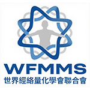
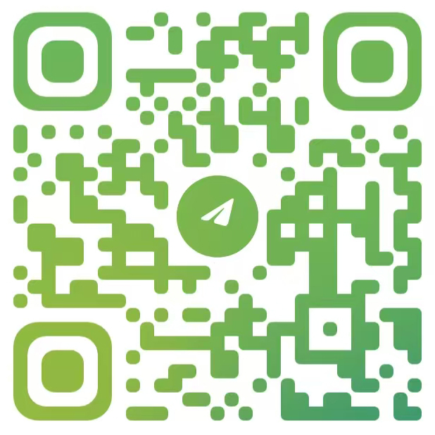

世界經絡量化學會聯合會
World Federation of Meridian Metrology Society(WFMMS)
一、組織概況
世界經絡量化學會聯合會（WFMMS）是一個致力於經絡醫學的量化與標準化研究的國際性非政府組織 (INGO)，成立於2025年，總部位於中國香港，旨在解決經絡治療中普遍存在的經驗依賴性強、缺乏生理參數依據、體質與環境干擾、療效評估模糊等問題，透過脈象與體質分型、節氣適應性調整、生物電檢測、AI輔助決策等量化技術的研究與應用，實現經絡治療的方案制定、穴位選擇、操作手法、操作時間的可量化、可重複、標準化。
二、主要宗旨
- 推動量化研究：鼓勵並支持對經絡治療中的關鍵要素（如穴位選擇、刺激強度、操作時長）進行量化研究，尋找客觀依據。
- 建立標準化共識：匯集全球專家的智慧，共同探討和制定經絡治療的標準化流程和指南。
- 促進可重複實踐：推廣量化和標準化的方法，幫助不同醫師在臨床實踐中實現更穩定、可重複的治療效果。
三、工作方向
標準化研究與制定
- 組織專家研討，探索經絡治療取穴的量化方法和標準。
- 研究並提出經絡操作時長、頻率等參數的量化建議。
- 收集和分析標準化臨床案例數據，驗證標準化方案的有效性。
學術交流與推廣
- 主辦或協辦以經絡治療標準化為主題的國際學術會議和研討會。
- 鼓勵成員發表關於經絡治療量化與標準化的研究成果。
- 透過線上線下平台，推廣標準化理念和實踐經驗。
教育培訓與認證
- 開發經絡治療標準化操作的培訓課程。
- 探索建立經絡治療標準化實踐的認證體系。
四、參與方式
1. 參與群體
- 專業機構：致力於經絡醫學標準化研究的科研院所、醫療機構、相關企業。
- 專業人士：：對經絡治療標準化有研究興趣和實踐經驗的醫師、研究員、技術人員。
2. 參與交流的益處
- 參與國際前沿的經絡治療標準化研究與討論。
- 分享和學習量化與標準化實踐的最新成果。
- 與全球同行建立聯繫，共同推動行業發展。
五、交流合作
交流夥伴
- 與對經絡治療標準化感興趣的國際學術組織、研究機構建立聯繫。
- 鼓勵成員間開展基於標準化主題的交流與合作項目。
- 建立標準化研究成果和實踐經驗的分享機制。
- 探討將標準化成果應用於臨床實踐和教育培訓的途徑。
六、聯繫方式
Telegram
微信 (WeChat)

請掃描上方二維碼聯繫我們。